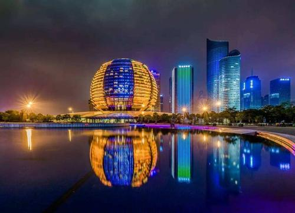

杭州，簡稱“杭”，古稱臨安、錢塘，是浙江省省會、副省級市、杭州都市圈核心城市，國務院批復確定的中國浙江省省會和全省經濟、文化、科教中心、長江三角洲中心城市之一。截至2019年，全市下轄10個區、2個縣、代管1個縣級市，總面積16853.57平方千米，建成區面積648.46平方千米，常住人口1036萬人，城鎮人口813.26萬人，城鎮化率78.5%。
杭州地處中國華東地區、錢塘江下游、東南沿海、浙江北部、京杭大運河南端，是環杭州灣大灣區核心城市、滬嘉杭G60科創走廊中心城市、國際重要的電子商務中心。杭州人文古跡眾多，西湖及其周邊有大量的自然及人文景觀遺跡，具代表性的有西湖文化、良渚文化、絲綢文化、茶文化，以及流傳下來的許多故事傳說。